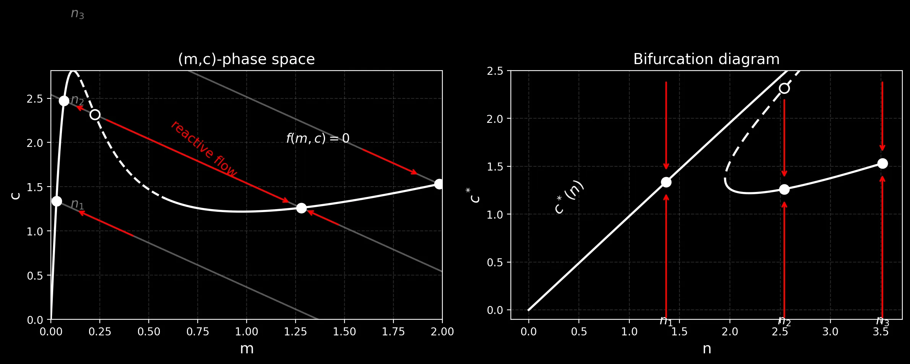
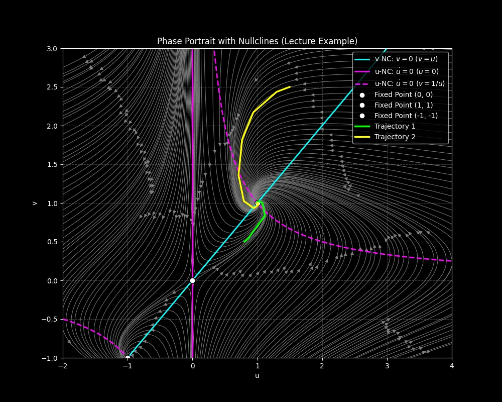
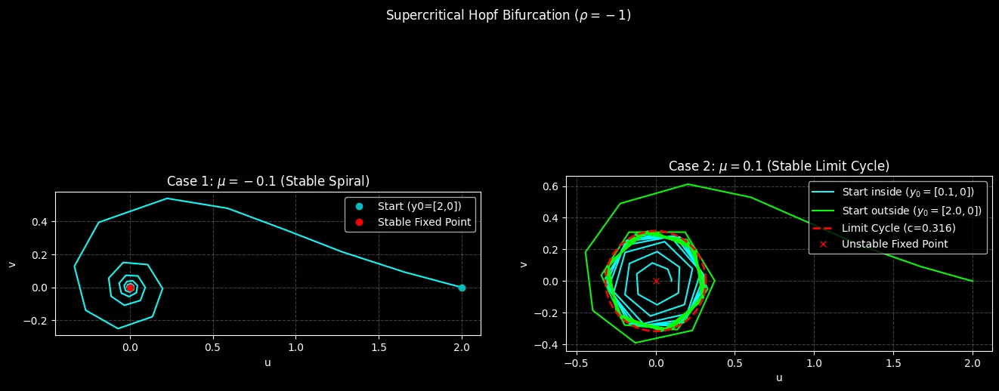
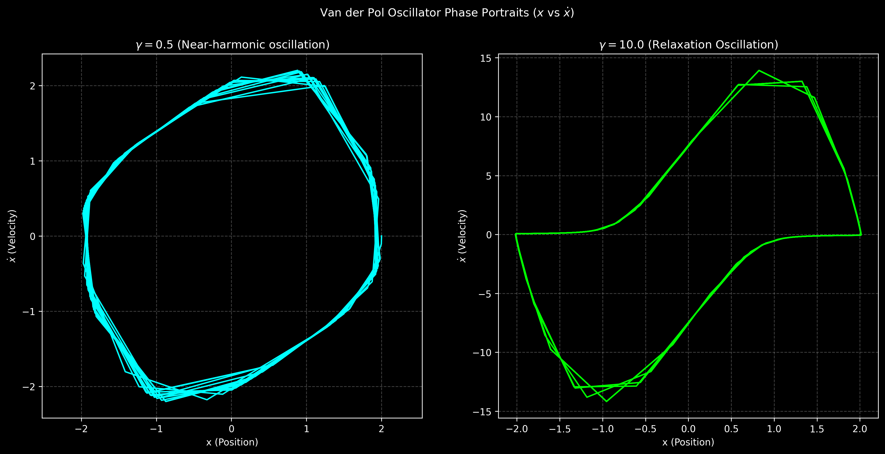
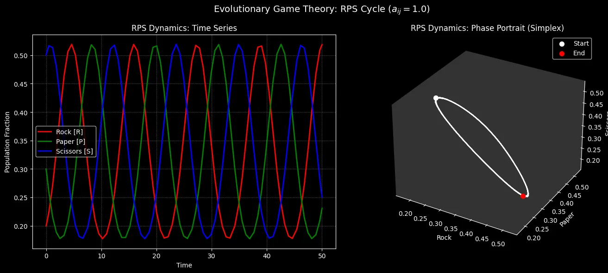
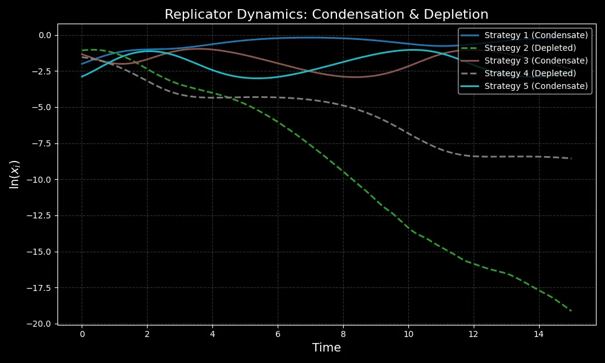
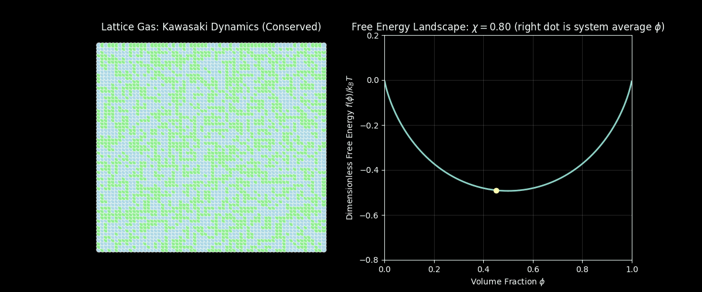
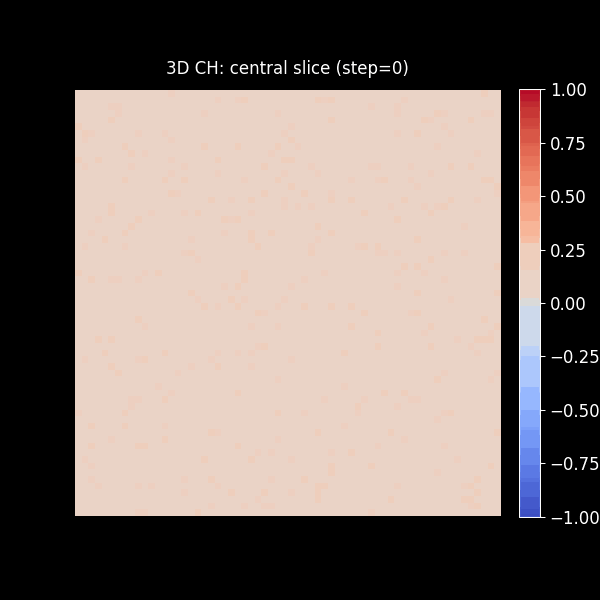

自组织与模式形成¶
这是 Self-Organization and Pattern Formation, Prof. Erwin Frey, LMU Munich, Winter Semester 2025/2026 课程的自学笔记。Frey 教授偏爱板书授课。为了记录我的学习过程，我将笔记整理成文章，并编写 Python 代码 以加深理解。

课程播放列表: YouTube Playlist | 哔哩哔哩
官方课程链接: LMU Munich - Self-Organization and Pattern Formation
课程概述¶
我们能否在不追踪每一个微观细节的情况下，为跨越流体、反应-扩散系统、软/活性物质乃至生命系统的各类自组织系统，建立起具有预测能力的理论？答案是肯定的：通过运用普适性 (universality)、对称性 (symmetry) 和守恒律 (conservation laws)，并采用粗粒化 (coarse-graining) 的方法，来揭示不稳定性机制、介观尺度下的物理定律以及标度行为。
课程涵盖那些能够自发产生秩序的、空间延展的非平衡态系统。重点关注不稳定性的发生、模式的选择、动力学过程，以及介观尺度物理定律的涌现。方法包括动力系统、连续场论、统计物理、弱非线性分析和微分几何。
课程主题¶
动力系统与分岔¶
线性/非线性稳定性，不动点/吸引子，可激发性，同步，混沌；范式和振幅方程。
- 1. 自组织：从鸟群到活细胞
- 2. 动力系统：从物理相变到演化博弈
- 3. 动力系统：不动点、鞍点和叉形分岔
- 4. 动力系统：尖点分岔、感染模型与跨临界分岔
- 5. 动力系统：二维质量守恒系统与雅可比矩阵
- 6. 动力系统：二维非保守系统与振荡器
- 7. 动力系统：庞加莱-本迪克松定理、RhoGTPase振荡器与石头剪刀布
- 8. 动力系统：复制子动力学与空间扩展——李雅普诺夫函数、玻色子凝聚与扩散方程
模式形成¶
相分离与粗化；界面动力学；反应-扩散图案和波；可激发介质；波前、脉冲、枝晶；薄膜去湿和流动。
- 9. 弛豫动力学：Ginzburg-Landau理论与Allen-Cahn方程
- 10. 弛豫动力学：界面动力学与曲率驱动流
- 11. 液态混合物中的热力学与相分离
- 12. 液态混合物动力学、渗透压与Cahn-Hilliard方程
- 13. 晶格气体模型与自由能
- 14. 相分离动力学
- 15. 成核理论与界面动力学
- 16. Ostwald熟化与粗化动力学，Lifshitz-Slyozov-Wagner (LSW) 理论
活性场论与细致平衡破缺¶
非变分耦合与应力；不存在自由能/李雅普诺夫泛函；确定性环流；非平衡相变点附近的普适性和标度行为。
- 17. 趋化性与细菌的主动运动，Run-and-Tumble 模型
- 18. Keller-Segel 模型，趋化不稳定性，有限时间爆破
- 19. 标量活性物质，运动诱导相分离，Active Model B
- 20. 活性布朗粒子，Active Model B+，气泡相
不稳定性机制¶
图灵和霍普夫不稳定性；界面不稳定性（Mullins-Sekerka）；流体动力学不稳定性（瑞利-贝纳德、剪切/粘性、马兰戈尼）；形态弹性屈曲和褶皱；萨夫曼-泰勒指进现象。
- 21. 图灵模式，Swift-Hohenberg 方程，振幅方程
- 22. 从微扰到振幅方程，NWS 方程，多尺度分析
- 23. Newell-Whitehead-Segel 方程，次级不稳定性
- 24. Eckhaus 与 Zigzag 不稳定性，相位缠绕解
- 25. 复Ginzburg-Landau 方程
- 26. 复Ginzburg-Landau 方程的稳定性
- 27. 复Ginzburg-Landau 方程的相图
- 28. CGLE 的应用，May-Leonard 模型，演化博弈
- 29. 反应-扩散波，波前传播速度
- 30. 仓本模型与同步转变
几何与约束¶
曲率和弱非平坦几何；边界条件；约束和非均匀性导致的选择。
- 31. 质量守恒反应-扩散系统，大肠杆菌 Min 振荡
- 32. 质量再分布不稳定性，绝热消除
- 33. 定态模式的几何构造
- 34. 稳态相图与体梯度效应
- 35. 体-边界耦合与核苷酸交换
- 36. 定态解与涌现饱和效应
- 37. 盒子几何中的线性稳定性分析
- 38. 大肠杆菌 Min 系统建模：骨架模型
- 39. Min 骨架模型的线性稳定性分析
- 40. Min 开关模型与鲁棒性
粗化动力学¶
粗化、相场模型和界面动力学的进阶主题。
- 41. Model A/B/C，凝固动力学与相场模型
- 42. 质量守恒系统中的粗化动力学
- 43. 普适生长律与对数粗化
- 44. 粗化律的标度分析
- 45. 从峰到台地：指数尾相互作用
- 46. 弱破缺质量守恒下的粗化中止
- 47. 弱破缺质量守恒的线性稳定性分析
- 48. 台地分裂机制：源驱动的侧向不稳定性
- 49. 台地的中断粗化与 Gibbs-Thomson 关系
- 50. 多组分反应-扩散系统中的表面张力
- 51. 反应-扩散系统中的 Gibbs-Thomson 关系
使用说明¶
每个 Python 文件对应课程系列中涵盖的特定主题。代码是 YouTube 视频中理论概念的实践实现，作为自学和学习笔记的一部分开发。
代码输出演示：
| Landau 自由能与相变 | 演化博弈动力学 | 复制子方程流 |
|---|---|---|
 |
 |
 |
| 分岔图 | 相图 |
|---|---|
 |
 |
| 尖点分岔曲面 | 感染动力学 |
|---|---|
 |
 |
| 雅可比矩阵分析与相空间 |
|---|
|  |
| Hopf 分岔 | 极限环 | Van der Pol 振荡器 |
|---|---|---|
|  |  |  |
第7讲：庞加莱-本迪克松定理、RhoGTPase 振荡器与石头剪刀布
| RhoGTPase 振荡器 | 石头剪刀布动力学 | 异宿轨道 |
|---|---|---|
 |
 |
 |
| 李雅普诺夫函数 | 扩散方程 |
|---|---|
|  |  |
第9讲：Ginzburg-Landau 理论与 Allen-Cahn 方程 (Model A)
Model A (Allen-Cahn) 动力学：Spinodal 分解、畴形成与粗化
圆形液滴在 Allen-Cahn 动力学下的曲率驱动收缩
| 二元相图 |
|---|
 |
对比：Cahn-Hilliard (Model B) 与质量守恒反应-扩散动力学

晶格气体模型的蒙特卡洛模拟：相分离与自由能演化
| 人群振荡动力学 | 频谱热力图 |
|---|---|
 |
 |
| 3D Cahn-Hilliard 液滴 | 演化切片 |
|---|---|
 |
 |
| 浓度分布 | 成核势垒 |
|---|---|
 |
 |
前置知识¶
- 统计力学与热力学
- 动力系统理论
- 微分方程
- 场论基础知识（有帮助但非必需）